每張卡選「✓ 正確」或「✗ 要改」，要改的寫備註。最下方會彙整，複製給 Claude。
轉彎前要減速禮讓、30公尺前顯示方向燈；開亮頭燈不是必要動作。
數字：30公尺
紅燈禁止通行，要停在停止線後，不得越線或進入路口。
數字：—
綠燈沒有絕對路權，要減速小心，注意前方兩側，有行人要讓行人。
數字：—
機車闖紅燈當場舉發，罰鍰 1,800～5,400元，記違規點數 3點。
數字：1,800～5,400元、記3點
快到路口燈轉紅還加速通過、紅燈右轉都違規；紅燈右轉罰 600～1,800元。
數字：600～1,800元
進路口後因擁塞或車流阻隔臨時停在路口、妨礙他車通行，不是闖紅燈，但仍要罰鍰。
數字：—
有停止線者，以停止線劃設後涵蓋的路面為路口；沒有停止線者，以道路邊緣虛擬連接線外 5公尺內為路口。
數字：5公尺
黃燈時已越過行人穿越道就繼續前進；還沒過停止線要減速，在停止線前等候。
數字：—
閃黃燈減速慢行；閃紅燈停車再開；一邊閃黃一邊閃紅時，閃黃燈者優先。
數字：—
指揮手勢和號誌不一致時，依交通指揮人員的指揮。
數字：—
無號誌路口，少線道車讓多線道車；支線道車讓幹線道車先行。
數字：—
無號誌路口要減速慢行；兩車同時到、都直行時，左方車讓右方車先行。
數字：—
無號誌圓環，要讓已在圓環內的車先行。
數字：—
行近行人穿越道要減速，有行人穿越就停下讓行人先行，沒畫穿越道的路口也要讓；行人違規仍要注意停讓。
數字：—
不讓行人優先通行要罰鍰；因此致傷亡，刑責加重至二分之一。
數字：二分之一
平交道、交岔路口、快車道、行人穿越道，不得臨時停車。
數字：—
停等紅燈避免停快車道前、常看後視鏡；有機慢車停等區要停在停等區或停止線後，不入待轉區。
數字：—
捷運／輕軌共用路口，聲光號誌故障要停看聽才通過；警示音響時不可加速搶過；黃線區不停留。
數字：—
柵欄放下時，要停等火車通過、柵欄拉起後再通過。
數字：—
車身顏色變更要向監理機關申請變更登記。
數字：—
微型電動二輪車最高時速 25公里以下，超速或擅改要罰鍰，改裝須改回。
數字：25公里
紅燈亮起後，車身超越停止線並足以妨害其他方向人車通行，是闖紅燈。
數字：—
紅燈時車身跨越停止線進行迴轉，仍是闖紅燈，不因後續迴轉動作而改變。
數字：—
⚠ 矛盾：M0535 的選項說「紅燈後車身超越停止線但實際上未妨害，不構成闖紅燈」是正確敘述，與 M0536「車身跨越停止線即構成闖紅燈」看似不同，請 Jim 審核
紅燈亮起前已通過停止線，因車流阻隔停等在路口內，再穿越到銜接路段，不視為闖紅燈。
數字：—
紅燈時只有前輪越過停止線、車身主體未越過，不構成闖紅燈，視為不遵守標線指示。
數字：—
紅燈期間牽引機車通過停止線或路口後繼續騎乘，視同闖紅燈。
數字：—
紅燈時跨越停止線（和行人穿越道）進入待轉區，或在待轉區未等號誌允許就直行，視同闖紅燈或違規。
數字：—
無待轉區的左轉專用車道，直行箭頭綠燈時超越停止線進路口停等，違反轉彎不依標線、號誌指示。
數字：—
這是「岔路」。
數字：—
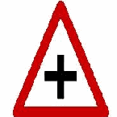
這是「岔路」。
數字：—
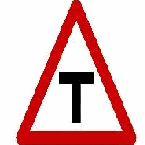
這是「岔路」。
數字：—
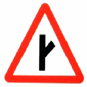
這是「當心台車」。
數字：—
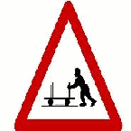
這是「當心兒童」。
數字：—
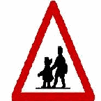
這是「當心行人」。
數字：—
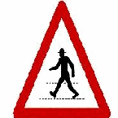
這是「禁止行人通行」。
數字：—
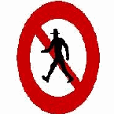
這是「行人專用」。
數字：—
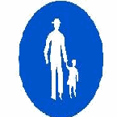
這是「)險升坡」。
數字：—
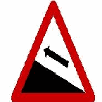
這是「注意號誌」。
數字：—
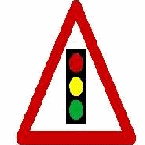
這是「此路不通」。
數字：—
這是「行車管制號誌」。
數字：—
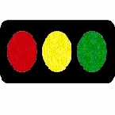
這是「特種閃光黃燈號誌」。
數字：—
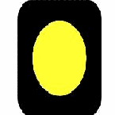
這是「行人專用號誌」。
數字：—
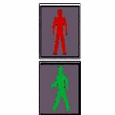
這是「行人穿越道號誌」。
數字：—
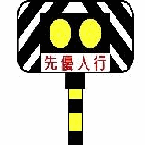
這是「路寬變更線」。
數字：—
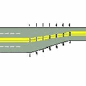
斜紋是指： 答：斑馬紋行人穿越道線
數字：—
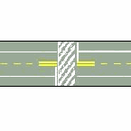
橫向白色實線是指： 答：停止線
數字：—
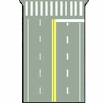
這是「前後來車停止，左右來車通行」。
數字：—
這是「全部車輛停止」。
數字：—
這是「前方來車停止」。
數字：—
這是「右方來車左轉彎」。
數字：—
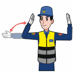
這是「右方來車停止」。
數字：—
這是「右方來車速行」。
數字：—
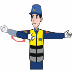
這是「左方來車速行」。
數字：—
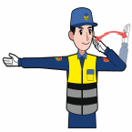
這是「左方來車左轉彎」。
數字：—
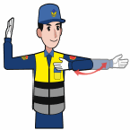